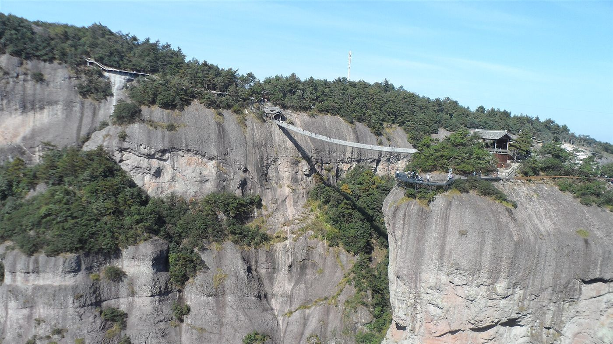
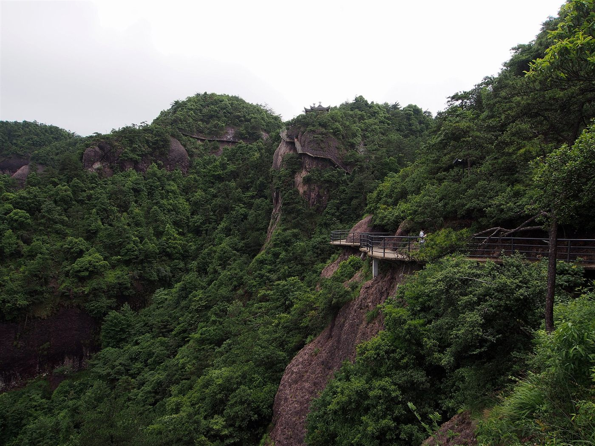
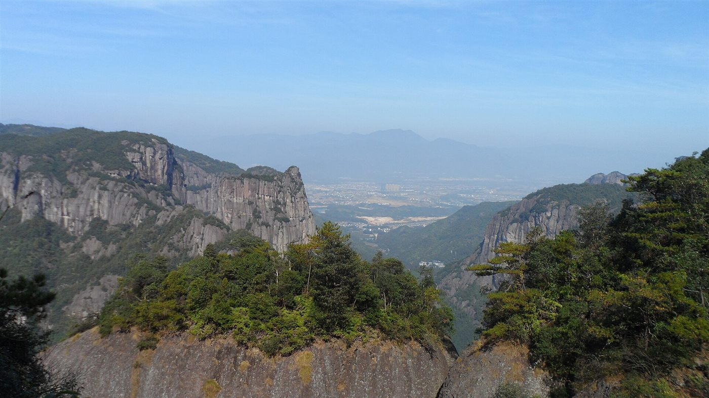
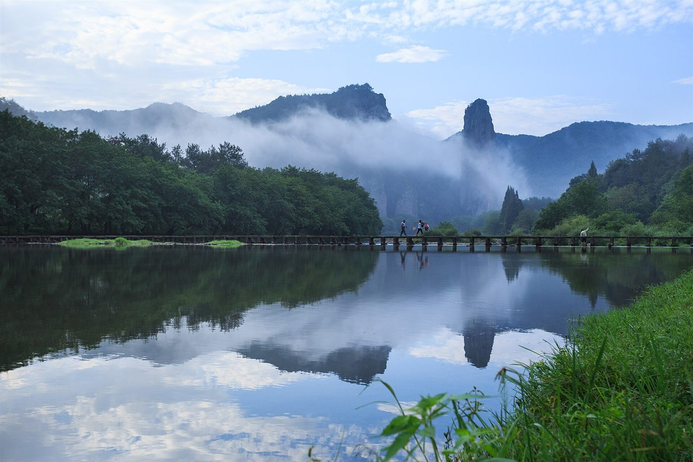
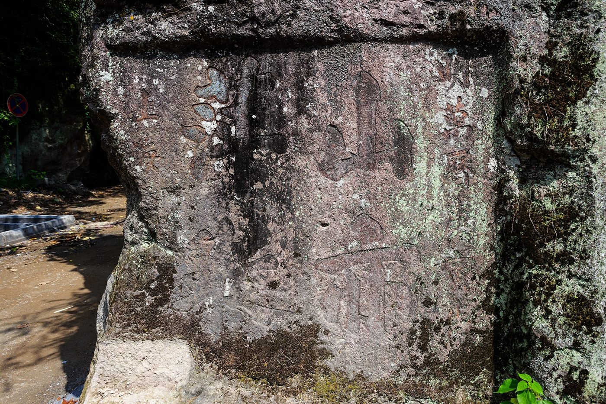

新主线只有三件事
10 月 5 日：你坐 G9421 南京南 08:07 出发，朋友从杭州西 09:30 上同一趟车，双方 10:42 在仙居站会合。
10 月 6 日：05:30 出发，06:00 前到神仙居南门，南天索道 + 山体扶梯上山，南门上、南门下。
10 月 7 日：两人优先买同一趟 G834，仙居 11:01 出发；朋友 12:20 在杭州西下车，你 14:14 到南京南。

你从南京南出发，朋友从杭州西出发，10 月 5 日在仙居站会合。10 月 6 日清晨进神仙居，10 月 7 日同坐 G834 返程：朋友在杭州西下车，你继续坐到南京南。
你从南京南走，朋友从杭州西走。最省事的做法不是先在杭州碰头，而是各自买去仙居的票，10 月 5 日在仙居站会合。
10 月 5 日：你坐 G9421 南京南 08:07 出发，朋友从杭州西 09:30 上同一趟车，双方 10:42 在仙居站会合。
10 月 6 日：05:30 出发，06:00 前到神仙居南门，南天索道 + 山体扶梯上山，南门上、南门下。
10 月 7 日：两人优先买同一趟 G834，仙居 11:01 出发；朋友 12:20 在杭州西下车，你 14:14 到南京南。
先把两人的门票、索道和预约时段拿到手，再订酒店。如果 10 月 6 日神仙居没票，双方都不要先去仙居，直接把 10 月 5 日目的地一起改成缙云仙都。
新方案比原计划少了很多票。现在只剩高铁、神仙居、住宿和可选接驳车。
| 要买什么 | 日期 | 去哪买 | 推荐班次 / 规则 | 紧急度 |
|---|---|---|---|---|
| 南京南 → 仙居 高铁 | 10 月 5 日 | 铁路 12306 官网或 App | 你首选 G9421 南京南 08:07—仙居 10:42；备选 G7581 南京南 09:18—仙居 12:02。 | 立刻买 |
| 杭州西 → 仙居 高铁 | 10 月 5 日 | 铁路 12306 官网或 App | 朋友首选 G9421 杭州西 09:30—仙居 10:42，和你在同一趟车会合；若人在杭州东，优先转到杭州西站上车，赶不上就改 D377 09:40—11:00。 | 立刻买 |
| 神仙居门票 + 索道 | 10 月 6 日 | 微信搜索 神仙居旅游 小程序，或进入神仙居官网 | 实名分时段预约，建议至少提前 1 天。参考价：门票约 110 元，索道上行 65 元、下行 55 元。 | 最高优先 |
| 南天顶 | 10 月 6 日 | 神仙居官方小程序 | 参考价约 99 元。能一起买就买；没买到不影响主线栈道，但会少一个高处观景点。 | 建议买 |
| 神仙居南门接驳 / 观光车 | 10 月 6 日 | 官方小程序或南门现场扫码 | 如果官方产品含接驳车，优先买联票。坚持南门进、南门出，不要南北门混用。 | 按官方产品买 |
| 仙居 → 杭州西 / 南京南 高铁 | 10 月 7 日 | 铁路 12306 | 首选 G834：仙居 11:01 → 杭州西 12:20 → 南京南 14:14。朋友杭州西下车，你继续坐。备选 G9424 仙居 13:52 → 南京南 16:51。 | 立刻买 |
| 住宿：白塔镇 / 神仙居南门 | 10 月 5 日 | 携程、美团、飞猪或高德地图酒店入口 | 为了 10 月 6 日 06:00 前到南门，这一晚住南门或白塔镇最合适。 | 尽快订 |
| 住宿：仙居站附近 | 10 月 6 日 | 携程、美团、飞猪或高德地图酒店入口 | 10 月 7 日 11:01 的高铁，住仙居站附近最稳。若不想换酒店，也可两晚都住白塔镇，但要更早出发。 | 尽快订 |
第 1 步抢两人 10/6 神仙居；第 2 步买你去程 G9421；第 3 步买朋友杭州西到仙居的 G9421；第 4 步买 10/7 G834；第 5 步订酒店。只要神仙居没票，双方目的地就要一起改成缙云仙都。
这个版本没有天台山，也不需要在杭州换乘。核心目标是把体力全部留给 10 月 6 日的神仙居。
核心任务：两人在仙居站碰头，下午只做入住和次日确认。
核心任务：第一批入园，索道和扶梯优先，减少徒步。
核心任务：优先坐同一趟 G834，朋友杭州西下车，你继续回南京南。
地图把去程、神仙居景区和返程分流分开。点击“没票备选”可以直接看缙云仙都替代路线。
舍弃天台山之后，强景观集中在神仙居。10 月 5 日下午不再硬塞大景区，10 月 6 日把好天气和体力都留给核心岩峰、栈道和如意桥。
神仙居最有辨识度的视角之一。建议早上先走这里，避开中午后的排队。

岩峰、深谷和高空栈道是核心景观。南天顶单独收费，能买就买，不买也能看主线。

这是少走路的关键组合。优先坐索道和扶梯，把体力留给最值得看的观景平台。
不要在 10 月 5 日先到仙居，再临时折返缙云。要换就从上车的终点开始换。
你从南京南出发，可选 G7625 06:48—09:59、G7349 07:37—11:38、G7627 08:55—12:01；朋友从杭州西查同方向到缙云西的班次。双方在缙云西站会合，住站附近。
官方购票：微信搜索 缙云仙都景区，或进入仙都景区官网。优先买含景交车的票，减少步行和转场。
你从缙云西回南京南，朋友回杭州。买票时先看 12306 联程，不要在仙居和缙云之间来回折返。
最好在出发前就确认 10 月 6 日神仙居是否有票。如果到 10 月 4 日晚上仍没有预约成功，直接按缙云方案订票和住宿。

神仙居没票时，南京南到缙云西的班次更多，整段改线比先到仙居再折返更顺。

优先景交车串联主要观景点，不要把仙都当成长距离徒步路线。
出发前再确认一次车次、余票、景区预约和索道运营。国庆规则可能临时调整。